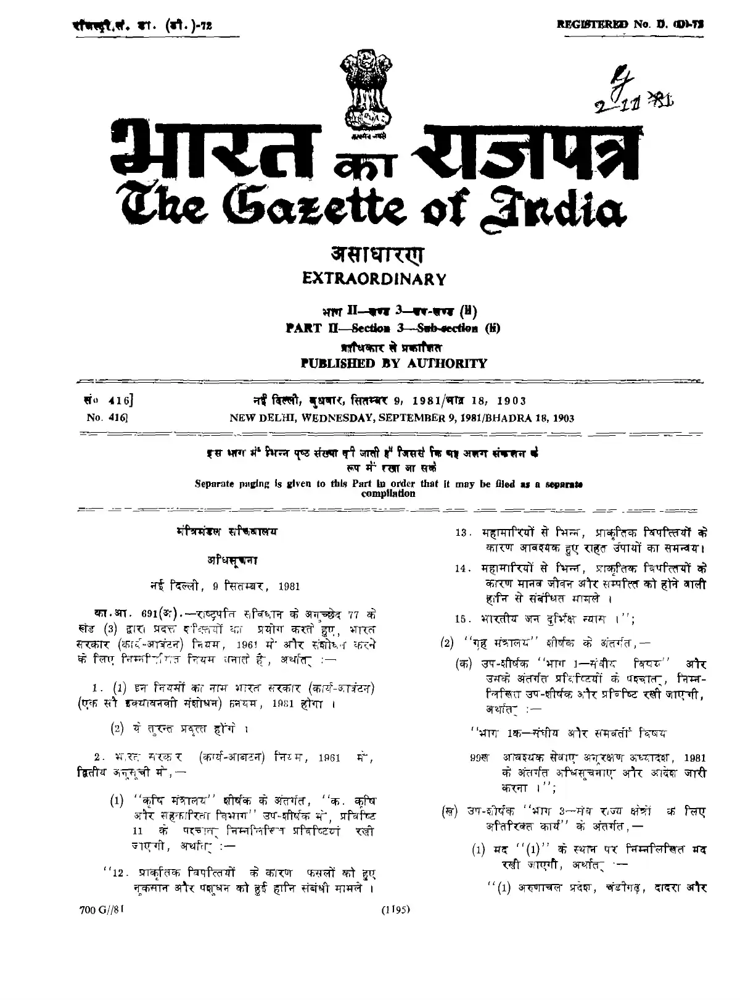
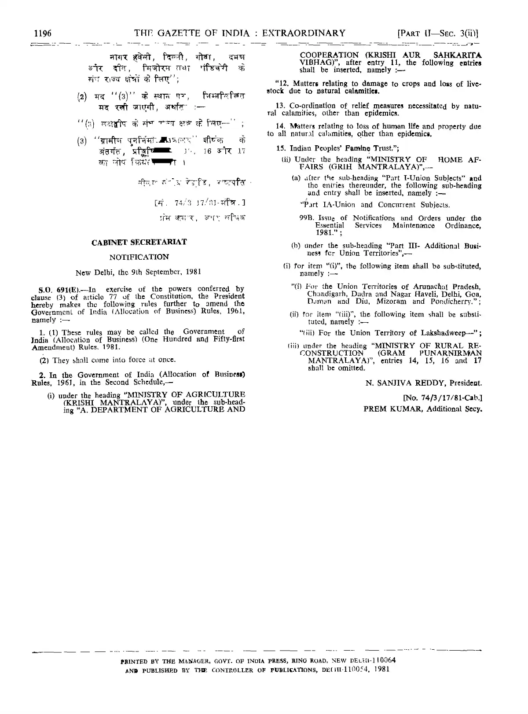

Amendment #151 (S.O. 691(E), 1981)
5 changes: 0 to the First Schedule, 5 to the Second Schedule. 3 applied2 not applied
What it did to the ministries
- moved4 subjects move from Ministry of Rural Reconstruction to Ministry of Agriculture change 1, 5 · histories: Rural Development, Agriculture
The order, page by page
Page 1 of 2

Page 2 of 2

12345after Schedule 2 › MINISTRY OF AGRICULTURE › DEPARTMENT OF AGRICULTURE AND COOPERATION › entry 11
- 12. Matters relating to damage to crops and loss of livestock due to natural calamities.
- 13. Co-ordination of relief measures necessitated by natural calamities, other than epidemics.
- 14. Matters relating to loss of human life and property due to all natural calamities, other than epidemics.
- 15. Indian Peoples' Famine Trust.
applied at schedule 2 › ministry Ministry of Agriculture › department A › part I › entry 12 in the Rules after #151
read quote mismatch
after Schedule 2 › MINISTRY OF HOME AFFAIRS › Part I-Union Subjects
- Part LA-Union and Concurrent Subjects
- 99B. Issue of Notifications and Orders under the Essential Services Maintenance Ordinance
- 1981.
applied at schedule 2 › ministry MINISTRY OF HOME AFFAIRS › part I in the Rules after #151
Schedule 2 › MINISTRY OF HOME AFFAIRS › Part III- Additional Business for Union Territories › item i
- (1) For the Union Territories of Arunachal Pradesh Chandigarh, Dadra and Nagar Haveli, Delhi, Goa Daman and Diu, Mizoram and Pondicherry.
not applied (the change could not be placed in the Rules as read; see How this document was read)
Schedule 2 › MINISTRY OF HOME AFFAIRS › Part III- Additional Business for Union Territories › item iii
- iii) For the Union Territory of Lakshadweep
not applied (the change could not be placed in the Rules as read; see How this document was read)
Schedule 2 › MINISTRY OF RURAL RECONSTRUCTION › entry 14; Schedule 2 › MINISTRY OF RURAL RECONSTRUCTION › entry 15; Schedule 2 › MINISTRY OF RURAL RECONSTRUCTION › entry 16; Schedule 2 › MINISTRY OF RURAL RECONSTRUCTION › entry 17
applied at schedule 2 › ministry MINISTRY OF RURAL RECONSTRUCTION › entry 14 in the Rules after #151
How this document was read
Known issues
| Change | Issue | Known as |
|---|---|---|
| 3 | change 3: no group_heading Part III- Additional Business for Union Territories under schedule 2 › ministry MINISTRY OF HOME AFFAIRS | Home Affairs' structure |
| 4 | change 4: no group_heading Part III- Additional Business for Union Territories under schedule 2 › ministry MINISTRY OF HOME AFFAIRS | Home Affairs' structure |
From the Government of India (Allocation of Business) Rules, 1961 and their amendments, as published by the Cabinet Secretariat (cabsec.gov.in), read by orgpedia. The readings of the older scanned gazettes have known gaps.